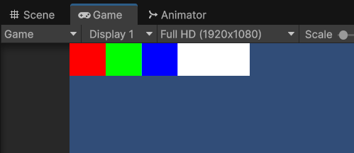
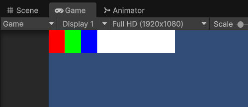
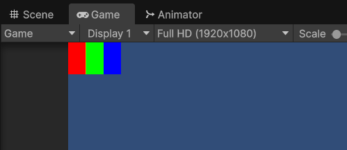
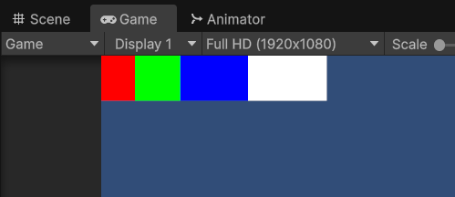
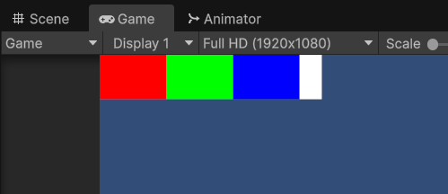
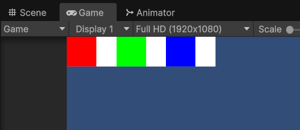
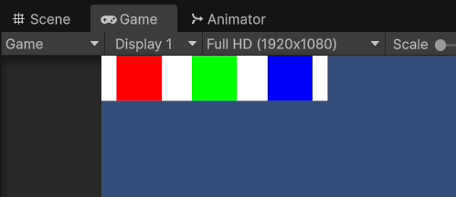

Positionner des éléments dans l'interface utilisateur
Contenus de la page
3-3 Interface utilisateur réactive 4 Programmer la logique du jeu ou de la simulation
Temps requis
30 minutes
À propos de la page
L'intégration des interfaces dans Unity se fait à l'aide d'un ensemble distinct de game objects qui peuvent être positionnés dans un espace 2D. Ils possèdent des caractéristiques différentes et doivent habituellement être utilisés qu'au sein de la partie dédiée aux interfaces.
Page de références de la documentation : Système uGUI.
Les canvas
Les canvas sont les éléments de base des interfaces. Ce sont eux qui contiennent tous les autres éléments qui peuvent s'afficher dans une interface. Lorsqu'on ajoute un canvas (menu UI (canvas) > canvas), un game object avec trois composants est ajouté. Selon le mode du canvas, il peut se comporter comme un game object standard, avec un transform pour le positionner dans le monde ou avoir un composant RectTransform pour le positionner dans l'espace 2D de l'interface.
Le composant Canvas
Plusieurs types de Canvas existent pour gérer différentes façons de présenter l'interface utilisateur.
| Mode | Description | Exemple d'utilisation | Paramètre supplémentaire |
|---|---|---|---|
| Screen space - Overlay | Affiche par-dessus le monde, cette interface définit les systèmes visibles à la personne joueuse qui ne sont pas dans le monde du jeu. | Menu, barre de vie, inventaire, fenêtre de quête... | |
| Screen space - World | Semblable à Overlay, mais il s'affiche par rapport à une caméra en particulier et reçoit les effets visuels appliqués à cette caméra. | Similaire à Overlay, mais considère l'ambiance du jeu | Render camera : quelle caméra fait le rendu de l'interface |
| World Space | Affiche le canvas dans le monde comme s'il s'agit d'un game object régulier. | Barre de vie, nom de personnage, bulle de dialogue... | Event camera : quelle caméra doit gérer les événements sur le UI (comme un clic de la souris). |
Travailler avec plusieurs canvas
Lorsqu'il y a plusieurs canvas, on peut choisir comment il se superpose avec les paramètres Sort Order (Screen Space Overlay), Order in layer (Screen space - Camera) et les sorting layers (World Space).
Le composant CanvasScaler
Le composant CanvasScaler définit comment l'interface se redimensionne lorsqu'elle est présentée dans une résolution différente de celle dans laquelle elle a été conçue. Son paramètre UI Scale Mode permet de choisir comme l'interface est redimensionnée dans un changement de résolution,
| Mode | Description | Paramètres supplémentaires |
|---|---|---|
| Constant pixel size | Le même nombre de pixels est utilisé, peu importe la résolution. Par exemple, un élément d'une largeur de 100px sur un écran de résolution 800px occupera 1/8 de l'espace, alors que sur un écran de 1920px, il en occupera environ 1/20. Les éléments rapetissent donc avec le changement de résolution. | Reference pixel per unit permet de configurer la largeur de référence en pixel des éléments graphiques. |
| Scale with Screen Size | Applique une mise à l'échelle pour conserver la même grandeur relative d'élément en appliquant une règle de 3 pour convertir la taille | La Reference Resolution est la résolution dans laquelle l'interface est développée et le Screen Match Mode permet de sélectionner la façon dont la mise à l'échelle est faite. Voir la documentation pour des détails sur chaque technique. |
| Constant Physical Size | Assure que le contrôle est rendu avec la même taille en unité réelle (par exemple 1 cm), peu importe la résolution. | Les paramètres affichés déterminent la référence du système sur lequel l'interface est conçue. |
Le composant GraphicRaycaster
Le composant GraphicRaycaster permet à Unity de détecter quel élément de l'interface est cliqué. Il n'y a de configuration particulière. Toutefois, si vos clics de souris ne sont pas détectés, l'absence de ce composant est une cause d'erreur fréquente.
Le EventSystem
Un autre game object appelée EventSystem est ajouté lorsque vous créez le premier canvas. Contrairement aux autres composants, il doit être présent qu'une seule fois dans le jeu. Il permet de faire le lien entre les contrôles de l'interface définis dans les Actions Maps et l'interface. Si vous utilisez des contrôles pour le focus ou des touches pour parcourir les différents contrôles, il est essentiel d'avoir ce composant. Il devrait se configurer automatiquement si vous n'avez pas modifié le Action Map UI.
Placer un élément
Le positionnement d'un élément se fait avec le composant RectTransform qui a des paramètres différents de celui d'un Transform. Si le canvas est en mode Screen Space les unités sont des pixels; en mode World Space, les unités sont des mètres.
RectTransform- Le système d'ancrage et de pivot rapide des composants : permet de modifier la position de l'ancre, du pivot et de l'objet selon un ensemble de valeurs rapides.
- La configuration manuelle des ancres : ajuste les valeurs d'ancre et de pivot à d'autres valeurs que celles déterminées.
- Le positionnement des éléments : ajuste manuellement les valeurs de position et de dimension.
- La rotation des éléments : permet d'appliquer une rotation à l'élément (comme le
Transform). - La mise à l'échelle : met à l'échelle l'élément (comme le
Transform).
Les ancres
La position des éléments de Unity se calcule à partir du pivot de l'élément et de sa position d'ancrage. Un pivot est le point (le pixel) qui est utilisé pour définir la position de l'objet. L'ancrage est la façon dont le pivot d'un élément se positionne par rapport à son parent. Par défaut, le pivot et l'ancre sont centrés et la position est celle par défaut. Le système de coordonnées du UI a comme point de référence le coin inférieur gauche de l'écran.

Pour modifier l'ancre, on clique sur la valeur à utiliser. Pour modifier le pivot, on appuie sur la touche Shift. Pour modifier la position, on appuie sur la touche Alt.
Prenons une image centrée et changeons seulement l'ancre pour utiliser le coin supérieur gauche de l'écran. L'objet ne se déplace pas, mais ses valeurs de positions sont modifiées.


Maintenant, si l'on change aussi le pivot de l'image (touche Shift) pour qu'il soit dans le coin supérieur gauche également. La position de l'objet sera la même, mais les valeurs de référence sont différentes, puisque la distance se calcule maintenant par rapport au coin gauche supérieur gauche.

Maintenant, l'on modifie aussi la position de l'objet (touche Alt) pour déplacer l'objet vers le coin supérieur gauche.

Et finalement, en déplaçant à la fois le pivot, l'ancre et la position (Shift + Alt) on obtient aussi un positionnement dans le coin supérieur gauche, mais cette fois-ci avec une position nulle.

Étirer les éléments
La dernière colonne et la dernière ligne du menu d'ancrage permettent de définir un comportement étiré, soit que l'enfant utilise la pleine largeur de son parent. Le fait d'avoir un objet étiré modifie les paramètres de positionnement des éléments.
- Lorsque l'objet est étiré horizontalement, le paramètre X et Width deviennent une marge à gauche et à droite avec les paramètres Left et Right.
- Lorsque l'objet est étiré verticalement, le paramètre Y et Height deviennent une marge en haut et en bas avec les paramètres Top et Bottom.
Le positionnement manuel, les rotations et la mise à l'échelle
Il est possible de régler au pixel près les positions des éléments avec le positionnement manuel. Si certaines valeurs sont grisées, c'est qu'elles sont contrôlées par un autre composant. Les valeurs disponibles varient aussi selon l'ancrage de l'élément.
Les rotations sont possibles dans les 3 axes, mais seul celui du Z aura un effet de rotation. Les autres axes placeront l'objet en oblique.
La mise à l'échelle fonctionne comme le composant Transform.
Empilement des éléments
Les éléments s'empilent selon l'ordre de la hiérarchie. La position en Z n'est pas prise en compte. Il existe des méthodes pour déplacer l'ordre des éléments par rapport à leur parent (le monter ou le descendre dans la fratrie).
Les layouts
Des composants existent pour organiser automatiquement les interfaces, les layouts. Sans ceux-ci, chaque élément doit être positionné individuellement ce qui est difficile pour les interfaces dynamiques ou comportant beaucoup d'éléments.
Il existe 3 composants de layouts dans Unity :
- Le
VerticalLayoutGroupqui positionne verticalement plusieurs éléments; - Le
HorizontalLayoutGroupqui positionne horizontalement plusieurs éléments; - Le
GridLayoutGroupqui organise dans un grille dont toutes les cellules sont identiques les éléments.
Le HorizontalLayoutGroup et VerticalLayoutGroup
Ces deux layouts ont les même paramètres :
- Padding : espacement entre la bordure du layout et l'élément;
- Spacing : espacement entre les éléments du layout;
- Child Alignement : emplacement par lequel le layout est rempli;
- Reverse Arrangement : organise les enfants du layout dans l'ordre inverse : les derniers enfants sont affichés en premier;
- Control Child Size, Use Child Scale et Child Force Expand contrôle l'interaction entre la taille du layout parent et la taille des enfants.
Dans la série de démonstration suivante 3 éléments de 100 px (rouge, vert, bleu) sont placés dans un layout horizontal de 500 px de large (blanc). Aucun espacement n'est placé entre les éléments.


Control Child Size permet au parent de contrôler la largeur des enfants. Il réduit les enfants à leur largeur par défaut. Si la taille totale des enfants excède celle du parent, alors les enfants sont réduits. Tous les enfants ont la même taille.




Use Child Scale détermine si la mise à l'échelle de l'enfant (scale) est utilisée ou non lorsque l'espace qui lui est alloué est calculé.




Child Force Expand oblige les éléments enfants à occuper toute la place du du parent en ajoutant de l'espace entre les enfants.




Faire un parent dynamique
On peut forcer un parent à se redimensionner selon son contenu. Pour ce faire, on doit utiliser les composants ContentSizeFitter et LayoutElement.
- Le composant
ContentSizeFitterest appliqué sur le parent et il définit comme l'objet se redimensionne horizontalement et verticalement. Il est possible d'utiliser la taille minimale des objets (min size) ou la taille préférée des objets (preferred size). Il peut y avoir qu'un seul composantContentSizeFitterdans une hiérarchie d'objets. - Le composant
LayoutElementpermet de définir la taille minimale (Min Width et Min Height), ainsi que le taille préférée (Preferred Width et Preferred Height). Les paramètres de taille flexible (Flexible Width et Flexible Height) permettent de définir, en termes relatifs, combien d'espace devrait être alloué à l'objet si de l'espace excédentaire est disponible.
Ignorer le layout
Le composant LayoutElement comporte le paramètre Ignore Layout qui permet à un enfant d'ignorer complètement le layout dans lequel il est placé.